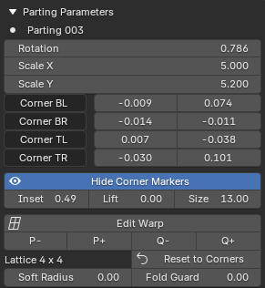

Parting Parameters¶
Applies to: Parting Placer V2.0.0 · Blender 4.4 · 5.2
This box holds the settings for the one parting picked in the list. It only appears while a parting is picked, and its second line names that parting.

Rotation¶
Turns the parting on the head. The default is 0.
The value is in radians, not degrees. A quarter turn is 1.571, and a half turn is 3.142.
Scale X / Scale Y¶
Fine-tune the parting's size along each side. Higher values make it smaller. Lower values make it bigger.
The template default is 5, but a placed parting can show other values.
Corner BL / BR / TL / TR¶
Four rows, one per corner of the parting, each with an X and a Y field. All start at 0, 0.
Turn on Show Corner Markers to see which corner of the parting each row belongs to.
Changing a corner's X or Y pulls that corner of the parting out of square. Use it to bend a parting's shape to fit the head.
On a lattice parting the four rows stay in the box, but the lattice sets the shape. See Convert To Lattice.
Show Corner Markers¶
Shows a label at each corner of the picked parting, so you can tell which way round it is. The button then reads Hide Corner Markers.
The markers are display only. Nothing is added to your scene and nothing is rendered.
Inset¶
Shown while corner markers are on. It sets how far out the labels sit, as a fraction of the way to each corner. At 1.0 they sit on the corners themselves. The default is 0.7, from 0 to 1.5.
The README calls it Marker Inset.
Lift¶
Shown while corner markers are on. It raises the labels off the surface so they read clear of the parting. The default is 0.6.
The README calls it Marker Lift.
Size¶
Shown while corner markers are on. It sets the text size of the labels. The default is 13, from 6 upwards.
Its tooltip says it follows the Resolution Scale in your Blender preferences. The labels stay in step with the rest of the interface.
Edit Warp¶
Bends the picked parting by dragging handles in the viewport. A corner warp has 4 handles. A lattice has one handle for each lattice point.
Select Edit Warp, then drag a handle with the left mouse button. The middle mouse button still orbits the view.
Press Enter to keep the result. Esc or right-click puts the warp back as it was. Selecting Edit Warp again also keeps the result.
The button stays pressed while that parting is being edited.
While you hold a handle, scroll changes Soft Radius. Shift and scroll changes Fold Guard.
A key guide in the viewport lists these keys while you edit. The sidebar stays usable during an edit.
Its tooltip reads: Drag the handles in the viewport to warp this parting.
Mirror and Duplicate carry the whole warp. A linked mirror follows lattice edits on its source while you drag.
For a walkthrough, see Shape A Parting With Edit Warp.
Convert To Lattice¶
Shown on a parting with a corner warp. It turns the corner warp into a 2 x 2 lattice without changing how the parting looks.
It is greyed out while that parting's warp is being edited.
Lattice Size¶
Shown on a lattice parting. P- and P+ take a column of handles away or add one. Q- and Q+ do the same for rows.
Each side goes from 2 to 8, so a lattice has up to 64 handles. The row underneath shows the size, for example Lattice 3 x 4.
Changing the size resamples the warp to fit the new grid, so its shape can shift. It shifts more when you take a row or column away.
Its tooltip reads: Add or remove a lattice row or column. The current warp is resampled to fit the new grid, so its shape can shift, more so when removing one.
These buttons are greyed out while that parting's warp is being edited.
Reset To Corners¶
Shown on a lattice parting, beside the size. It puts the parting back to a corner warp.
The corner warp comes from the four Corner rows, so the lattice shape is not kept.
It is greyed out while that parting's warp is being edited.
Soft Radius¶
Shown on a lattice parting. Default 0.5, from 0 to 2.
How far a drag pulls nearby handles along with the one you hold, as a share of the lattice size. At 0 only that handle moves.
A change applies from the next handle you grab. Scroll changes it on a corner warp too, where the slider is hidden.
Its tooltip reads: Soft-radius falloff for Edit Warp dragging, as a fraction of the lattice size. 0 drags a single control point.
Fold Guard¶
Shown on a lattice parting. Default 0.05, from 0 to 0.5.
Stops a lattice warp from folding back through itself. Higher values stop it sooner. At 0 the warp can go right up to the fold.
It has no effect on a corner warp. A change shows the next time the warp is rebuilt, for example on your next drag.
Its tooltip reads: How far the warp is kept from folding through itself. Higher caps the warp sooner (gentler); 0 lets it warp right up to the fold.
If You're Stuck
- Can't see this box? Pick a parting in the Parting List first.
- A parting looks doubled or folded? See A Parting Looks Doubled Or Folded.
- Anything else: Still Stuck.
Recommended next: Bake